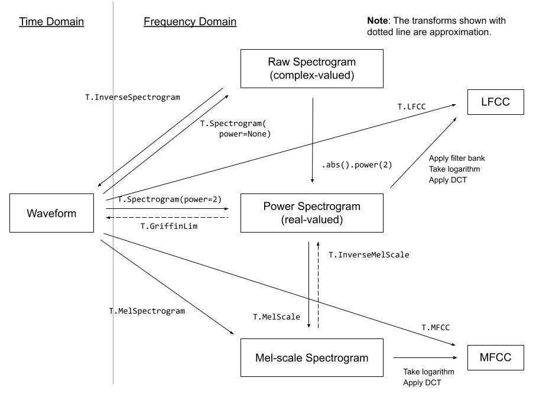
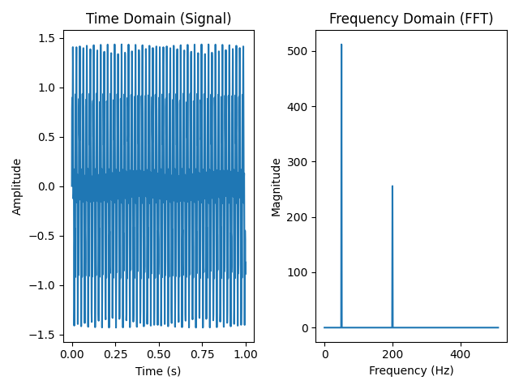

8.1 Speech Feature Extraction
Created Date: 2025-05-31
8.1.1 Digit Audio
8.1.2 Audio Format
Audio formats are file formats used to store digital audio data on computers and other devices. They can be broadly categorized into uncompressed, lossless, and lossy formats:
Uncompressed formats like WAV and AIFF retain all original audio data, resulting in high-quality audio but large file sizes.
Lossless formats like FLAC and ALAC compress audio data without losing any quality, offering a good balance between file size and quality.
Lossy formats like MP3 and AAC achieve smaller file sizes by discarding some audio data, which can impact sound quality, especially at lower bitrates.
Waveform Audio File Format (WAVE, or WAV due to its filename extension) is an audio file format standard for storing an audio bitstream on personal computers.
8.1.3 FFmpeg Tools
FFmpeg is the leading multimedia framework, able to decode, encode, transcode, mux, demux, stream, filter and play pretty much anything that humans and machines have created. It supports the most obscure ancient formats up to the cutting edge.
8.1.4 Feature Extractions
torchaudio implements feature extractions commonly used in the audio domain. They are available in torchaudio.functional and torchaudio.transforms .
functional implements features as standalone functions. They are stateless.
transforms implements features as objects, using implementations from functional and torch.nn.Module . They can be serialized using TorchScript.
The following diagram shows the relationship between common audio features and torchaudio APIs to generate them.

Figure 1 - Audio Feature Extractions
For the complete list of available features, please refer to the documentation.
8.1.4.1 FFT
FFT helps us find out which frequencies are present in a signal, and how strong they are. You feed it a time-domain signal (e.g., a waveform), and it returns a frequency-domain representation (a spectrum).
File simple_fft.py show a example, create a signal with two frequencies: 50Hz and 120Hz, FFT is used to extract the hidden frequency components from the time domain.
sample_rate = 1024
duration = 1
t = numpy.linspace(0, duration, sample_rate, endpoint=False)
freq1 = 50
freq2 = 200
signal = numpy.sin(2 * numpy.pi * freq1 * t) + 0.5 * numpy.sin(2 * numpy.pi * freq2 * t)
fft_result = numpy.fft.fft(signal)
freqs = numpy.fft.fftfreq(len(t), 1 / sample_rate)
positive_freqs = freqs[:sample_rate // 2]
magnitude = numpy.abs(fft_result)[:sample_rate // 2]
Figure 2 - Simple FFT
8.1.4.1 Spectrogram
To get the frequency make-up of an audio signal as it varies with time, you can use torchaudio.transforms.Spectrogram() .
The core of spectrogram computation is (short-term) Fourier transform, and the n_fft parameter corresponds to the \(N\) in the following definition of descrete Fourier transform:
The value of n_fft determines the resolution of frequency axis. However, with the higher n_fft value, the energy will be distributed among more bins, so when you visualize it, it might look more blurry, even thought they are higher resolution.
8.1.4.2 GriffinLim
To recover a waveform from a spectrogram, you can use torchaudio.transforms.GriffinLim .
The same set of parameters used for spectrogram must be used.